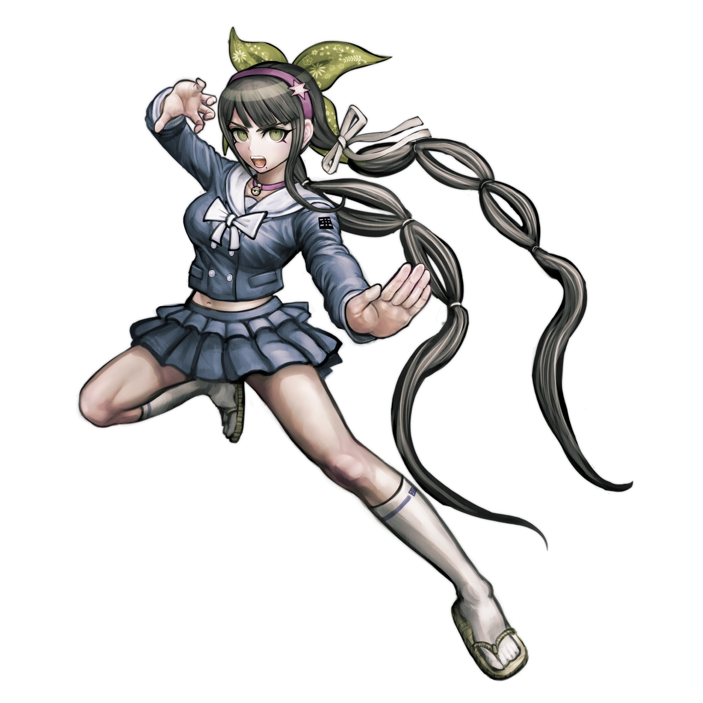

Tenko Chabashira (茶柱 転子) is a student in the Ultimate Academy for Gifted Juveniles and a participant of the Killing School Semester featured in Danganronpa V3: Killing Harmony. Her title is the Ultimate Aikido Master (超高校級の「合気道家」 lit. Super High School Level Aikido Master).
